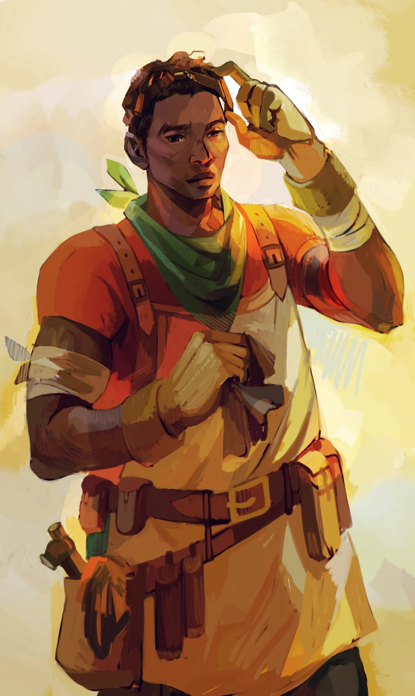

PERSONAGGI PRINCIPALI di Percy Jackson e gli Dei dell'Olimpo
 Annabeth Chace:
Annabeth Chace:
- semidea figlia di Atena, la dea della saggezza e della guerra strategica. È intelligente, determinata e ha una grande
abilità nella strategia e nella battaglia, ragazza di Percy
.
 Luke Castellan:
Luke Castellan:
- semidio figlio di Ermes, all'inizio è un alleato, ma si rivela essere il principale
antagonista della serie. Ha una storia complicata e una profonda rabbia nei confronti degli dei dell'Olimpo.
.
 Grover Underhood:
Grover Underhood:
- satiro e il migliore amico di Percy. Ha il compito di proteggere Percy e guidarlo nelle sue avventure. È affettuoso,
premuroso e ha un grande amore per la natura e per gli animali.
.
 Thalia Grace:
Thalia Grace:
- semidea figlia di Zeus, la quale ha una storia complicata con i suoi compagni semidei e una forte rivalità con il padre.
.
 Clarisse La Rue:
Clarisse La Rue:
- semidea figlia di Ares, il dio della guerra. Clarisse è burbera e aggressiva, ma dimostra di avere un cuore d'oro sotto la
sua dura scorza.
.
 Chirone:
Chirone:
- centauro che insegna ai semidei al Campo Mezzosangue. Chirone è un mentore per Percy e gli altri semidei e li aiuta
a sviluppare le loro abilità.
.
 Sally Jackson:
Sally Jackson:
- madre di Percy, una donna umana che ha il dono della vista, che può vedere aldilà della Foschia e che comprende il mondo di Percy.
.
 Nico di Angelo:
Nico di Angelo:
- semidio figlio di Ade, il dio degli Inferi. Nico è introverso, tormentato dal suo passato
e cerca di trovare il suo posto nel mondo dei semidei.
.
 Rachel Elisabeth Dare:
Rachel Elisabeth Dare:
- mortale con la capacità di vedere attraverso la Foschia, Rachel è un'importante alleata di Percy e Annabeth.
È una pittrice talentuosa e diventa coinvolta nelle avventure dei semidei.
.
 Tyson:
Tyson:
- ciclope e fratellastro di Percy, Tyson è affettuoso e leale. Anche se inizialmente ostracizzato dai suoi compagni
semidei, dimostra di essere un prezioso alleato.
.
 Silena Beauregard:
Silena Beauregard:
- semidea figlia di Afrodite, è coinvolta in importanti eventi all'interno della
serie e dimostra coraggio e sacrificio.
.

Charles Beckendorf:
- semidio figlio di Efesto, è abile nella costruzione e nell'uso delle armi, e gioca
un ruolo chiave nella lotta contro i Titani.
.
 Ethan Nakamura:
Ethan Nakamura:
- semidio figlio di Nemesis e uno degli antagonisti della serie. Ethan nutre un profondo risentimento verso gli
dei dell'Olimpo e cerca di rovesciarli come Luke.
.
 Zoe Nightshade:
Zoe Nightshade:
- cacciatrice di Artemide determinata e coraggiosa, è un'alleata di Percy.
.
 Bianca di Angelo:
Bianca di Angelo:
- sorella di Nico di Angelo, Bianca si unisce ai semidei al Campo Mezzosangue ma fa delle scelte che avranno
conseguenze significative.
.
 Mrs. O'Leary:
Mrs. O'Leary:
- enorme cane infernale appartenente a Nico di Angelo. Nonostante la sua natura spaventosa, Mrs. O'Leary
è estremamente affettuosa con i suoi amici semidei.